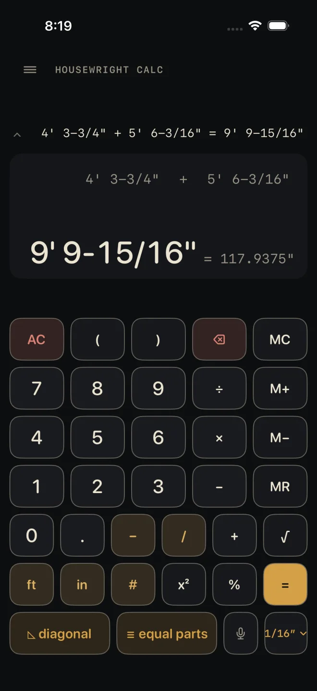
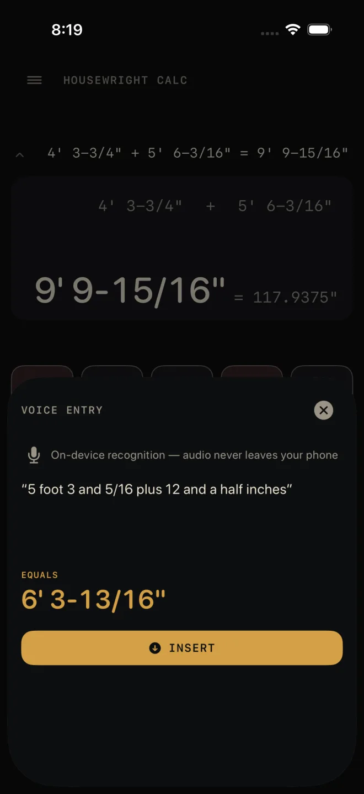

Voice entry
The mic key on the Dimensional Calculator lets you say a measurement or a sum instead of typing it. You see what the phone heard, you see what it adds up to, and nothing goes into the calculator until you tap INSERT. Recognition runs on the phone — audio never leaves it.
Step by step

1- On the Dimensional Calculator, tap the mic key. The VOICE ENTRY sheet opens and starts listening straight away. The first time, iOS asks for speech recognition and then for the microphone.
- Say the measurement or the sum the way you would say it to the crew, then stop talking.
- Read the transcript. It is exactly what the phone heard.
- Check EQUALS. It is the value of what you said, at the calculator's current fraction setting.
- Tap INSERT. The button only appears once you have finished speaking, so a half-heard phrase cannot be inserted.

3 4 5What INSERT does
Inserting presses the same keys you would have typed. It does not press = for you, so after a spoken sum the calculator shows the sum waiting, not the answer — press =, or end the phrase with the word "equals".
- A half-typed number on the display is cleared first, so it cannot run together with the spoken one.
- A sum in progress is kept. Type 5 ft +, then speak the second measurement.
What you can say
The vocabulary is small on purpose. English only.
- Feet and inches — "five foot three", "twelve feet", "5 foot 3 and 5/16".
- Fractions — "three quarters", "an eighth", "five and five sixteenths", "twelve and a half inches", "three quarters of an inch". Halves, thirds, quarters, eighths, sixteenths, thirty-seconds and sixty-fourths are understood.
- Decimals — "2.5 feet" or "2 point 5 feet".
- Larger numbers — "forty seven", "one hundred twenty".
- Sums — "plus", "minus", "times", "multiplied by", "divided by": "3/16 plus 5/8", "8 divided by 2".
- Equals — "6 inches plus 6 inches equals".
Use "and" between a whole number and its fraction — it does the job of the dash key.
What it will not take
The parser never guesses. If any word in the phrase is not one it knows, the whole phrase is refused and you are asked to try again.
- Any other word — "5 foot 3 whatever" is refused.
- "to", "too" and "for" heard in place of two and four. They are not turned into numbers.
- Negative numbers.
- A sum with a piece missing — "5 plus", or "plus 5".
- A number straight after inches with nothing between — "6 inches 3/4". Say "6 and 3/4 inches".
- A decimal with a fraction on it — "2.5 and 3/4".
- "clear". Close the sheet and use AC.
If it doesn't work
- "Speech recognition is off for Housewright Calc…" or "The microphone is off for Housewright Calc…" — the sheet names the permission that was refused. Tap Open Settings on the sheet and turn that one on.
- "The microphone is busy…" — another app or a call has the microphone. Close it and open the sheet again.
- "On-device speech recognition isn't available for…" — the phone has no on-device recogniser for the language it names. The app tries your own English first, then US English. There is no server fallback, because audio never leaves the phone.
- "Didn't hear anything" or "Didn't catch that as a dimension" — tap TRY AGAIN. If the transcript shows a word from the list above, rephrase it.
Related
- Entering feet, inches and fractions
- Ask Siri — the same phrases, without opening the app
- Bosch laser measure
- The Dimensional Calculator
- Troubleshooting